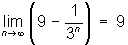
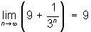

Costa, a 5th grader, finds a pattern while iterating a function
Costa started iterating the function 5 + x/2 putting 12 in for x. He got 5+ 12/2 = 11, then put 11 in for x to get 5+ 11/2 = 10.5 , and so on. He found the infinite sequence
12, 11, 10.5, 10.25, 10.125, 10.0625, ...
He saw that the fractional part of these numbers were being divided by 2 each time! Don wrote these as
10+2, 10+1, 10+1/2, 10+1/4, 10+1/8, 10+1/16, ...
or 10+1/2n and as n->', 1/2n -> 0, so
10+1/2n -> 10, the limit of this sequence.
Costa then looked at 6 + x/2 and correctly predicted all numbers would form sequences that go to 12.
Now Costa is working on 6 + x/3 and predicted it would go to 18. In Mathematica he tried
f[x_]=6+x/3
N[NestList[f,18,6],20]
{18.000000000000000000, 12.000000000000000000, 10.000000000000000000, 9.3333333333333333333, 9.1111111111111111111, 9.0370370370370370370, 9.0123456790123456790} Which showed it was not going to 18. 9 maybe? He is working on this.
He then tried this function: f[x_]=6+x/10
and got
{18.000000000000000000, 7.8000000000000000000, 6.7800000000000000000, 6.6780000000000000000, 6.6678000000000000000, 6.6667800000000000000, 6.6666780000000000000}. They had a discussion about what 6.6666780000000000000 was getting close to. That started Don working with Costa on changing an infinite repeating decimal to a fraction.
In the meantime, Don worked on this himself, using Costa's idea. For 6 + x/3, starting with 8 (smaller than 9) in for x, Don got 8, 8 2/3, 8 8/9, 8 26/27,... or
9 -1, 9 -1/3, 9 - 1/9, 9 - 1/27,..., 9 - 1/3n and n->', 1/3n -> 0, so

One reads the above statement as "the limit of 9 - 1/3n as n goes to infinity, equals 9"
Starting with 12 (larger than 9) in for x, Don got 12, 10, 9 +1/3, 9 + 1/9, 9 + 1/27,..., 9 + 1/3n , and ignoring the 12 and 10, as n->', 1/3n -> 0, so

For 6 + x/3 Costa realized that each number would go to 9 or (6*3)/2; as found in Mathematica for 6+x/10 above, each number goes to 6.666... or 6 2/3. So it was Costa's job to find the number to divide 6*10 by to get 6 2/3. He found this to be 9 and wrote 6*10/9. The Don asked him to generalize what a + x/b would go to. He realized that the number he divides by is 1 less than b, so he wrote this as a*b/(b-1).
Fine job Costa!